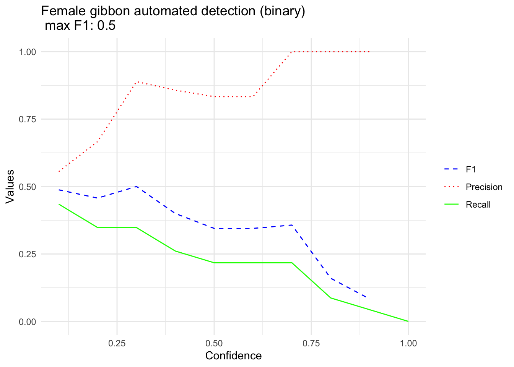

4 Part 3. Calculate performance metrics
4.1 Part 3a. Load libraries and specify file paths
Please note this script is very much in development!
# Load necessary libraries
library(stringr) # For string manipulation
library(caret) # For machine learning and model evaluation## Loading required package: ggplot2## Loading required package: lattice##
## Attaching package: 'dplyr'## The following objects are masked from 'package:stats':
##
## filter, lag## The following objects are masked from 'package:base':
##
## intersect, setdiff, setequal, union##
## Attaching package: 'data.table'## The following objects are masked from 'package:dplyr':
##
## between, first, lastlibrary(ggplot2)
# Change this so that it points to the location on your computer
FolderPath <- '/Users/denaclink/Library/CloudStorage/Box-Box/gibbonRSampleFiles/'
# Get a list of TopModel result files
TopModelresults <- list.files('data/DetectAndClassifyOutput',
full.names = TRUE)
# Get a list of annotation selection table files
TestDataSet <- list.files( paste(FolderPath,"/SelectionTables/GibbonTestSelectionTables", sep=''),
full.names = TRUE)4.2 Part 3b. Match detections with human annotations
Now we match the detections from the model to human annotations. The start time/end time buffer tells us how much flexibility the detections can have from the start/end time of the call. If the calls are short, then this should be short.
start.time.buffer <- 8
end.time.buffer <- 4
# Preallocate space for TopModelDetectionDF
TopModelDetectionDF <- data.frame()
# Loop through each TopModel result file
for (f in 1:length(TopModelresults)) {
# Read the TopModel result table into a data frame
TempTopModelTable <- read.delim2(TopModelresults[f])
# Extract the short name of the TopModel result file
ShortName <- basename(TopModelresults[f])
ShortName <- str_split_fixed(ShortName, pattern = 'gibbonR', n = 2)[, 1]
# Find the corresponding annotation selection table
testDataIndex <- which(str_detect(TestDataSet, ShortName))
if(length(testDataIndex) > 0 ){
TestDataTable <- read.delim2(TestDataSet[testDataIndex])
# Round Begin.Time..s. and End.Time..s. columns to numeric
TestDataTable$Begin.Time..s. <- round(as.numeric(TestDataTable$Begin.Time..s.))
TestDataTable$End.Time..s. <- round(as.numeric(TestDataTable$End.Time..s.))
DetectionList <- list()
# Loop through each row in TempTopModelTable
for (c in 1:nrow(TempTopModelTable)) {
TempRow <- TempTopModelTable[c,]
# Check if Begin.Time..s. is not NA
if (!is.na(TempRow$Begin.Time..s.)) {
# Convert Begin.Time..s. and End.Time..s. to numeric
TempRow$Begin.Time..s. <- as.numeric(TempRow$Begin.Time..s.)
TempRow$End.Time..s. <- as.numeric(TempRow$End.Time..s.)
# Determine if the time of the detection is within the time range of an annotation
TimeBetween <- data.table::between(TempRow$Begin.Time..s.,
TestDataTable$Begin.Time..s. - start.time.buffer,
TestDataTable$End.Time..s. + end.time.buffer)
# Extract the detections matching the time range
matched_detections <- TestDataTable[TimeBetween, ]
if (nrow(matched_detections) > 0) {
# Set signal based on the Call.Type in matched_detections
TempRow$signal <- 'female.gibbon'
DetectionList[[length( unlist(DetectionList))+1]] <- which(TimeBetween == TRUE)
} else {
# Set signal to 'Noise' if no corresponding annotation is found
TempRow$signal <- 'noise'
}
# Append TempRow to TopModelDetectionDF
TopModelDetectionDF <- rbind.data.frame(TopModelDetectionDF, TempRow)
}
}
# Identify missed detections
if (length( unlist(DetectionList)) > 0 & length( unlist(DetectionList)) < nrow(TestDataTable) ) {
missed_detections <- TestDataTable[-unlist(DetectionList), ]
# Prepare missed detections data
missed_detections <- missed_detections[, c("Selection", "View", "Channel", "Begin.Time..s.", "End.Time..s.", "Low.Freq..Hz.", "High.Freq..Hz.")]
missed_detections <- missed_detections
missed_detections$File.Name <- ShortName
missed_detections$model.type <- 'SVM'
missed_detections$probability <- 0
missed_detections$signal <- 'female.gibbon'
# Append missed detections to TopModelDetectionDF
TopModelDetectionDF <- rbind.data.frame(TopModelDetectionDF, missed_detections)
}
if (length( unlist(DetectionList)) == 0) {
missed_detections <- TestDataTable
# Prepare missed detections data
missed_detections <- missed_detections
missed_detections$File.Name <- ShortName
missed_detections$model.type <- 'SVM'
missed_detections$probability <- 0
missed_detections$signal <- 'female.gibbon'
# Append missed detections to TopModelDetectionDF
TopModelDetectionDF <- rbind.data.frame(TopModelDetectionDF, missed_detections)
}
}
}
head(TopModelDetectionDF)## Selection View Channel Begin.Time..s. End.Time..s. Low.Freq..Hz.
## 1 1 Spectrogram 1 1 108.404 119.474 400
## 2 2 Spectrogram 1 1 126.334 135.085 400
## 3 3 Spectrogram 1 1 135.125 144.125 400
## 4 4 Spectrogram 1 1 166.456 176.316 400
## 5 5 Spectrogram 1 1 208.497 220.857 400
## 6 6 Spectrogram 1 1 270.979 284.060 400
## High.Freq..Hz. File.Name model.type probability signal
## 1 1600 S11_20180217_080003 SVM 0.219 noise
## 2 1600 S11_20180217_080003 SVM 0.289 noise
## 3 1600 S11_20180217_080003 SVM 0.747 female.gibbon
## 4 1600 S11_20180217_080003 SVM 0.708 female.gibbon
## 5 1600 S11_20180217_080003 SVM 0.372 female.gibbon
## 6 1600 S11_20180217_080003 SVM 0.312 female.gibbon## [1] 31##
## female.gibbon noise
## 23 84.3 Part 3c. Calculate performance metrics
Now that we have matched annotations and detections we can calculate performance over a number of thresholds
# Convert signal column to a factor variable
TopModelDetectionDF$signal <- as.factor(TopModelDetectionDF$signal)
# Display unique values in the signal column
unique(TopModelDetectionDF$signal)## [1] noise female.gibbon
## Levels: female.gibbon noise# Define a vector of confidence Thresholds
Thresholds <-seq(0.1,1,0.1)
# Create an empty data frame to store results
BestF1data.framefemale.gibbonBinary <- data.frame()
# Loop through each threshold value
for(a in 1:length(Thresholds)){
# Filter the subset based on the confidence threshold
TopModelDetectionDF_single <-TopModelDetectionDF
TopModelDetectionDF_single$Predictedsignal <-
ifelse(TopModelDetectionDF_single$probability <=Thresholds[a], 'noise','female.gibbon')
# Calculate confusion matrix using caret package
caretConf <- caret::confusionMatrix(
as.factor(TopModelDetectionDF_single$Predictedsignal),
as.factor(TopModelDetectionDF_single$signal),positive = 'female.gibbon',
mode = 'everything')
# Extract F1 score, Precision, and Recall from the confusion matrix
F1 <- caretConf$byClass[7]
Precision <- caretConf$byClass[5]
Recall <- caretConf$byClass[6]
FP <- caretConf$table[1,2]
TN <- sum(caretConf$table[2,])#+JahooAdj
FPR <- FP / (FP + TN)
# Create a row for the result and add it to the BestF1data.frameGreyfemale.gibbon
#TrainingData <- training_data_type
TempF1Row <- cbind.data.frame(F1, Precision, Recall,FPR)
TempF1Row$Thresholds <- Thresholds[a]
BestF1data.framefemale.gibbonBinary <- rbind.data.frame(BestF1data.framefemale.gibbonBinary, TempF1Row)
}## Warning in
## confusionMatrix.default(as.factor(TopModelDetectionDF_single$Predictedsignal),
## : Levels are not in the same order for reference and data. Refactoring data to
## match.4.4 3d. Plot the results
We can plot precision, recall, and F1 as a function of the model confidence or threshold. Note that we would expect really great performance, as we only have a small number of training samples.
female.gibbonMax <- round(max(na.omit(BestF1data.framefemale.gibbonBinary$F1)),2)
# Metric plot
female.gibbonBinaryPlot <- ggplot(data = BestF1data.framefemale.gibbonBinary, aes(x = Thresholds)) +
geom_line(aes(y = F1, color = "F1", linetype = "F1")) +
geom_line(aes(y = Precision, color = "Precision", linetype = "Precision")) +
geom_line(aes(y = Recall, color = "Recall", linetype = "Recall")) +
labs(title = paste("Female gibbon automated detection (binary) \n max F1:",female.gibbonMax),
x = "Confidence",
y = "Values") +
scale_color_manual(values = c("F1" = "blue", "Precision" = "red", "Recall" = "green"),
labels = c("F1", "Precision", "Recall")) +
scale_linetype_manual(values = c("F1" = "dashed", "Precision" = "dotted", "Recall" = "solid")) +
theme_minimal() +
theme(legend.title = element_blank())+
labs(color = "Guide name", linetype = "Guide name", shape = "Guide name")
female.gibbonBinaryPlot## Warning: Removed 1 row containing missing values or values outside the scale range
## (`geom_line()`).
## Removed 1 row containing missing values or values outside the scale range
## (`geom_line()`).